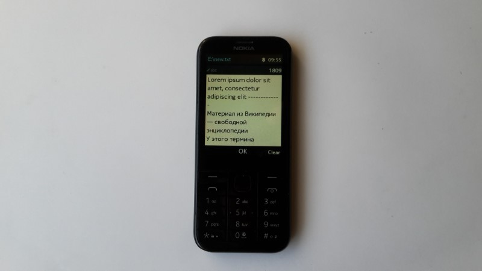

Basic app to edit txt files for MRE platform (including Nokia S30+). If exists automatically open "new.txt" file on storage card or phone memory. For editing other file please change this name with file browser to "new.txt". App make file copies on storage card before change this information. Key "OK" save file editing changes, key "Exit" close application. Tested on Nokia 225 with display resolution 240x320. For using with Nokia mobile phone, app must be signed with IMSI (your SIM card) code. https://vxpatch.luxferre.top. Application file - "Textep.vxp".
